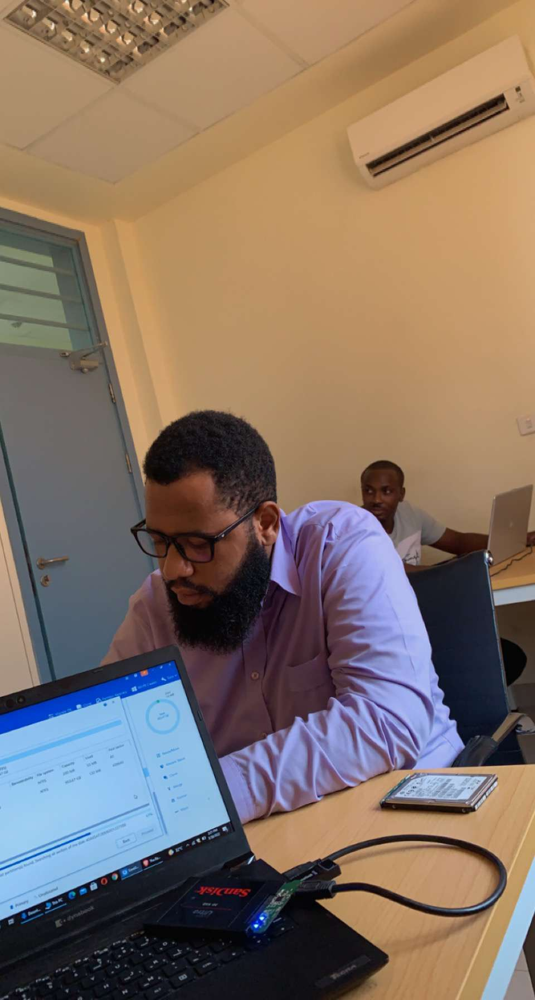
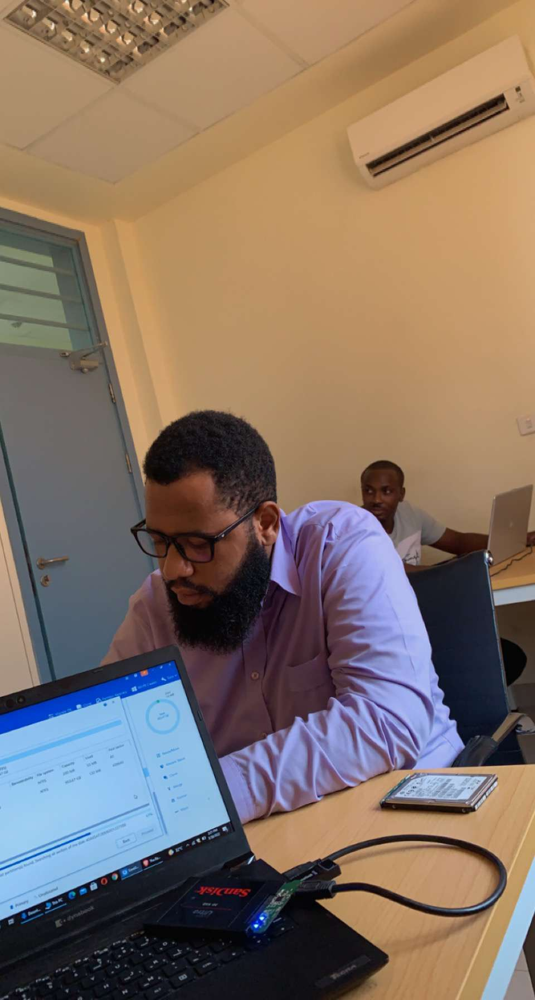

About Me
Born in Ghana, Alex King Osei Junior, now resides with alone in Accra. He works as an I.T. Manager at a hospital. I treasure spending with work and church colleagues. I love travelling as well as playing video games.
Born in Ghana, Alex King Osei Junior, now resides with alone in Accra. He works as an I.T. Manager at a hospital. I treasure spending with work and church colleagues. I love travelling as well as playing video games.
